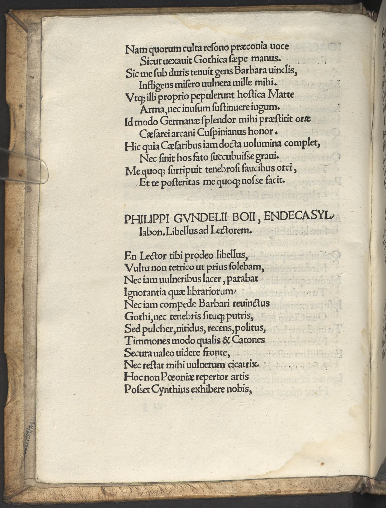

Spießheimer 6 (Philipp Gundel)
Faksimile

Transkription
Philippi Gundelii Boii, Endecasyllabon. Libellus ad Lectorem.
En Lector tibi prodeo libellus,
Vultu non tetrico ut prius solebam,
Nec iam vulneribus lacer, parabat
Ignorantia quae librariorum,
Nec iam compede Barbari revinctus
Gothi, nec tenebris situque putris,
Sed pulcher, nitidus, recens, politus,
Timones modo qualis et Catones
Secura valeo videre fronte,
Nec restat mihi vulnerum cicatrix.
Hoc non Paeoniae repertor artis
Posset Cynthius exhibere nobis,
Non Asclepius aut senex Machaon,
Non ars Philliridis, Podalirique.
Verum Cuspinianus ille, docto
Qui Graium superat lepore Atridam,
Qui nunc Caesarei decus senatus
Et Phoebi gemina peritus arte
Toto nomine noscitur sub orbe,
Is mi praestitit hoc amande Lector,
Hunc multos simileis sui videre
Austerosque iuvat stilo Catones
Tullos Sulpiciosque Caesaresque
Nostri vincere saeculi Iuventam,
Istud me duce consequere Lector.
Non te tramite devio disertum
Nec longo faciam modo labore.
Ergo me tibi profuisse quisquis
Fructum, commoda, sentiens fateris,
Haec adscribito Iudici salutis
Lector candide vindicique nostrae,
Namque illi, fateor, nec est quod obstet,
Plus iam debeo quam puer parenti,
Illo vindice non Stygis cruenti,
Cernemus vada, Sisyphique saxum,
Sed dum sidera vixerint polusque,
Et dum Cuspiniani erunt labores,
Hoc me nomine posteri legetis.)
Übersetzung
<Ein Gedicht> in Elfsilblern des Boiers Philipp Gundel. Das Büchlein an den Leser.
Sieh, Leser, ich zeige mich dir, ein Büchlein, nicht mit finsterer Miene, wie ich es zuvor pflegte, und nicht mehr mit Wunden zerfleischt, wozu die Unkenntnis der Buchhändler führt, auch nicht mehr durch die Fußfessel des barbarischen Goten angebunden, noch verfallen durch Finsternis und Moder, sondern ansehnlich, glänzend, frisch und poliert, wie beschaffen ich mit unbesorgtem Buchdeckel auch die Timons und Catos zu sehen vermag, und nicht bleibt mir eine Narbe der Wunden. Dies könnte uns nicht der Erfinder der paeonischen Kunst, der kynthische Apoll, gewähren, nicht Asklepios oder der Alte Machaon, nicht die Kunst des Philyriden und des Podaleirios. Aber jener Spießheimer, der in gelehrter Anmut den griechischen Atreussohn, den Sohn des Laertes und Nestor übertrifft, der jetzt als Zier des kaiserlichen Senats und bewandert in der doppelten Kunst des Phoebus durch seinen Namen auf dem ganzen Erdkreis gekannt wird. Dieser gewährte mir dies, lieber Leser, diesen erfreut es, viele ihm ähnliche zu sehen und mit seinem Stift die strengen Catos, Tuller, Sulpicier und Caesaren, die Jugend unseres Jahrhunderts, zu besiegen. Verfolge dies unter meiner Führung, Leser. Ich werde dich nicht auf einem entlegenen Weg oder erst mit einer langen Mühe redegewandt machen. Also, wer auch immer du <bist, der du> den Vorteil und Nutzen bemerkst und bekennst, dass ich dir genützt habe, dies soll dem Richter und Beschützer unseres Wohls zugeschrieben werden, geneigter Leser. Denn jenem, so bekenne ich und es gibt nichts, was mich daran hindert, schulde ich schon mehr als ein Knabe einem Elternteil. Mit jenem als Beschützer werden wir nicht blutig die Gewässer der Styx und den Fels des Sisyphus sehen, sondern während die Sterne und der Himmel und während die Mühen Spießheimers fortbestehen, werdet ihr Nachkommenden mich unter diesem Titel lesen.
Metadaten
| Titel des Gedichts: | Philippi Gundelii Boii, Endecasyllabon. Libellus ad Lectorem. |
| Autor der Gedichts: | Philipp Gundel (Philippus Gundelius) |
| Containerwerk: | Panaegyrici Variorum Autorum et Declamationes Nonnullae perquam eruditae hactenus non impressae, Wien 1513 |
| Autor des Containerwerks: | Johannes Spießheimer (Joannes Cuspinianus) |
| Gattung des Containerwerks: | Edition, Panegyricus, Deklamation |
| Erscheinungsjahr: | 1513 |
| Verschlagwortung: | Hendekasyllabi, Elfsilbler, Buch, Lob, Rettung vor Vergessen, Neuheit, Frische, Nachruhm, Unterweisung, Belehrung, Wissen, Cicero, Cato, Timon, Apoll, Asclepius, Machaon, Cheiron, Agamemnon, Odysseus, Nestor, Sulpicius, Caesar, Styx, Sisyphus, Unterwelt, Sterne, Himmel |